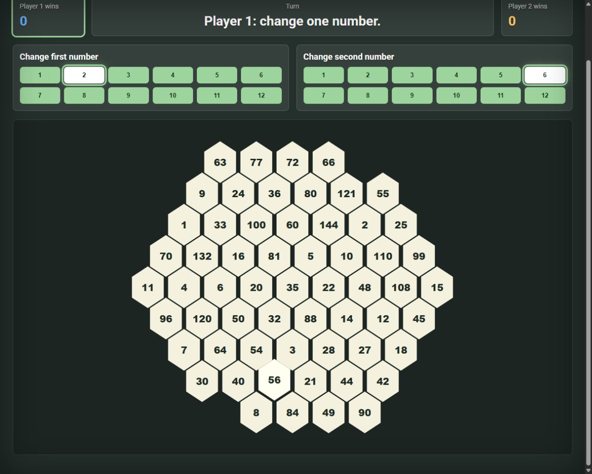
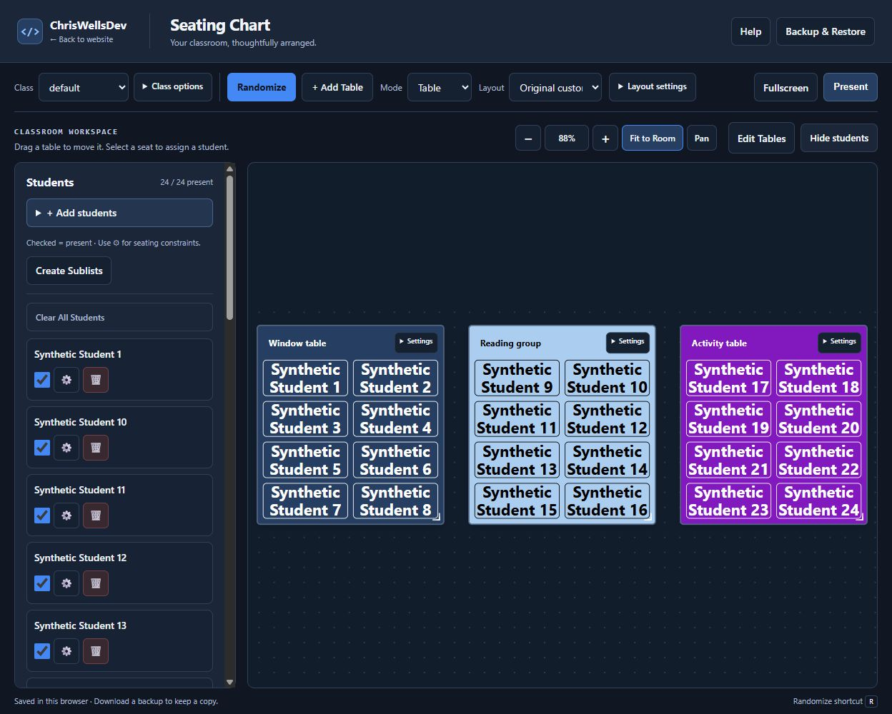

Browser Games
Hex Math
Change one multiplication factor, claim a product, and connect four hexes in a two-player game.
ChrisWellsDev / A personal development website
This is my personal development website: software projects, browser tools, games, and experiments. Try something in your browser, or explore the code and project notes.
Featured project / Browser tool
Plan a classroom with custom table or grid layouts, student assignments, seating rules, and random seating. Save classes and layouts in this browser.

Two browser games and a desktop utility.

Change one multiplication factor, claim a product, and connect four hexes in a two-player game.

Select shuffled numbers from one to five in ascending order.

A Python desktop utility with configurable click intervals, mouse buttons, and a start/stop hotkey.
No installation needed for these browser projects.